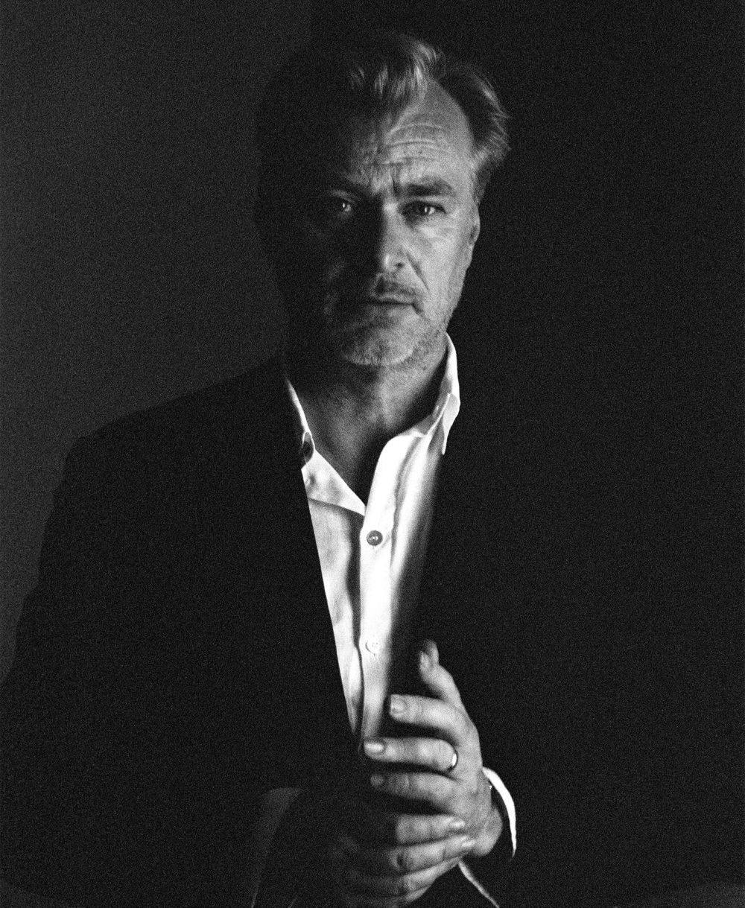

영화 정보
이 시대 영화계 최고의 거장 크리스토퍼 놀란 감독의 새로운 신화 인류 최고의 고전 [오디세이아]가 스크린에 펼쳐진다! 10년간 이어진 트로이 전쟁을 승리로 이끈 영웅 '오디세우스'(맷 데이먼)는 왕의 부재를 틈타 침탈과 권력 다툼이 벌어진 왕국에서 그를 기다리고 있는 아내 '페넬로페'(앤 해서웨이)와 아들 '텔레마코스'(톰 홀랜드)에게 돌아가기 위한 여정에 나선다. 그러나 신들의 분노를 산 그의 귀환 앞에는 거대한 폭풍과 괴물들, 그리고 거스를 수 없는 운명의 시련이 기다리고 있는데… "누구도 나의 귀향을 막을 수 없어. 신들조차도"
감독 및 출연진

크리스토퍼 놀란
감독
맷 데이먼
주연 · 오디세우스
톰 홀랜드
주연 · 텔레마코스
앤 해서웨이
주연 · 페넬로페
코멘트
이동진 평론가
장엄하게 쌓아올린 육각형 영화의 금자탑.
욘욘
트로이에~~서~~ 누가 돌아왔~~게~
영화보는 김덕배
가장 고결한 항해는 세상을 건너는 것이 아니라, 끝내 자신에게로 돌아오는 것임을 되새기는 불멸의 서사시.